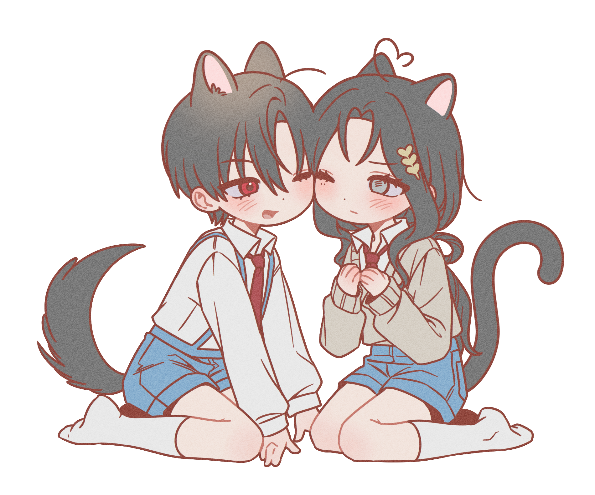

CREPE @Mingsu_mi
MOHA
@PRIN__KO
공계
블루스카이
크레페
오픈 카톡
메일
모하, 나희, 프린, 히순, 일칠, 힛포 등
성인 여성. 닉네임은 편한대로 불러주세요. 완전히 다른 이름만 아니라면 뭐라고 불러도 OK. 용건은 직멘, DM, 오픈카톡 다 괜찮아요.
CREPE @Mingsu_mi
모하, 나희, 프린, 히순, 일칠, 힛포 등
성인 여성. 닉네임은 편한대로 불러주세요. 완전히 다른 이름만 아니라면 뭐라고 불러도 OK. 용건은 직멘, DM, 오픈카톡 다 괜찮아요.
디자인, 그림, 글 등
DM 보다는 오픈카톡을 더 선호합니다.
HL>GL>BL 다만 커뮤는 ALL 위주로 가요.
성향상 직멘(언급)을 잘 못하고, 뉴짤을 그려도 보내고 바로 삭제하기도 합니다….
자캐 썰 잘 안 푸는 편인 것 같아요…. 님캐 썰을 더 열심히 풉니다…. 그래도 뭐가 궁금하다 말하면 최대한 고민해봅니다. 다만 일방적으로 푸는 건 안 좋아합니다. 가는 게 있으면 오는 게 있고… 해야하지 않나요? -//- 물론 오는 게 있으면 보답하려고 많이 노력합니다.
더불어 맨날 자캐 자요, 잘 모르겠어요, 같은 느낌으로 답변해도 적당히 애정하고 있습니다…. 너무 곧이곧대로 믿지 않으셨으면 좋겠어요.
페어틀, 커미션, 이메레스, 합작, 시트 등등 너무너무 좋아합니다.
그런데 이제 게으름을 동반한…. 제가 먼저 제안 드리는 경우도 몇 있고, 제안 주시면 열심히 찾아보고 열심히 편집하니 편하게 언급해주세요. ^//^
정말 좋아하는 친구가 생기면 종종 부탁드리는 편이긴 하나… 기본적으로 잘 안 갑니다. 집중력이 낮은 편이고 쉽게 지루함을 느끼는 사람이라 책상 앞에 3시간 앉아서 역극만 하는 상황에 지루함을 느껴요. TRPG 하다 말고 트위터 돌아다니고 그럽니다….
그럼에도 제안 주시면 감사히 가겠습니다! COC만 가봤고 룰북 소지하고 있어요. GM 몇 번 해보았습니다.
안 합니다! 제안 주지 마세요. 저도 제안하지 않습니다.
- 요즘 합앤의 정의가… 굉장히 애매한 것 같더라구요? 제가 말하는 합앤: 서로 관캐 아님, 캐합 좋은데 걍 앤캐나 하죠?(가벼움) 입니다…. 서로 관캐인 거 밝히고 하는 앤캐는 합앤 아니라고 생각하고 있어요! 다만 용기가 없어서 먼저 관캐라고 잘 못 밝히는 편입니다….
커뮤 열어주세요~ ◁ 언급 OK!
다만 너무 구체적으로 자주 언급하면 무척이나 스트레스 받아 합니다. 실제로 몇 년 전 해당 건으로 스트레스를 너무 받는 바람에 해결해보겠다고 꾸역꾸역 열었는데 열어달라 요청했던 사람들의 4/5가 신청서도 제출하지 않은 경험이 있어서… 별로 안 좋아합니다….
제가 확실하게 안 된다고 했을 경우 자주 언급하지 말아주세요. 1~2번 가지고 스트레스 안 받습니다. 지나치게 자주 여러 사람이 했을 경우에만 힘들어해요.
커뮤 러닝 후에는 기본적으로 정말 마음이 맞다고 생각되는 극소수 인원만 데려오고 있습니다.
탐라 내 소수 인원을 지향하고 있기 때문에 팔로 50~60 이하를 유지하고 있습니다.
교류가 없고, 잘 들어오지 않는다고 판단되는 계정 등은 팔로 정리로 블언블 하기도 합니다. 블락이 아닌 이상 큰 의미는 없으니 다시 팔로 주시면 받습니다.
비계 트친소 안 합니다. 제가 먼저 부탁드리지 않는 이상, 타 오너님께서 찾으실 경우 저한테 먼저 연락 주세요.
이별은 블언블로 부탁드려요. 저도 악감정이 있는 게 아닌 이상, 블언블로 이별합니다.
제게 불편한 점이 생겼다면, 부디 꼭 연락 주셨으면 좋겠어요. 굳이 참지 않으셔도 괜찮습니다. 제가 더 나은 사람이 될 수 있도록 도와주세요.
트훔 50%, 수제 트윗 50% 일 정도로 트훔을 많이 합니다.
트훔 싫어하시는 분은 기억하고 안 하고 있으나… 제가 놓쳤다면 꼭! 말씀해주세요. 하지 않습니다.
일단 커뮤계이기에 거의 안 하긴 하나, 일상, 셀털, 아무말, 관심사 인용, 남돌(엑소)&야구(야구선수) 언급을 종종 합니다.
현실 남자를 좋아하지 않는 분이 많아 최대한 자제하고 있으며, 아주 종종 인용할 때 있어요. (대부분 야구선수.)
타임라인 내 알티를 전부 꺼둡니다. 저도 알티 안 해요. 인용트 제외 들어오는게 없기 때문에 직알이 어쩌구~ 하면 궁금해서 자주 님의 탐라를 훔쳐봅니다…. 나쁜 의미는 없어요….
위의 이유와 추천탐라를 자주 보기 때문에 nn시간 전 트윗에도 답멘 달고 합니다. 별 생각 없이 하니까 너무 놀라지 말아주세요.
마음 잘 안 눌러요.
요즘 트위터가 통 이상하더군요…. 알림을 씹어 먹거나 오지 않는 경우가 많아 종종 알림을 놓칠 때가 있어요. 다시 언급해주시면 달려갑니다! 제 멘션은 급하거나 중요한 거 아닌 이상 굳이 언급 안 해드려요.
남돌 / 야선 / 변백현 / 도경수 / 백도 / 백현 / 경수 / 디오 / 엑소 / 랜더스 / 쓱 / 최지훈 / 박성한 / 김정민 / 그때 그때 유행하는 것들
야구, 커뮤, 로맨스 장르, 웹툰, 강아지 영상, 인디 음악, 쿠키런 등
야구 언급은 최대한 타 계정에서만 하고 있으나 이 타임라인에도 야구를 좋아하는 지인분들이 꽤 있어서 종종 합니다.
타 팀이면 그나마 괜찮은데, 제가 응원하는 팀을 직접적으로 욕하고 시비거는 트윗 굉장히 난감해요. 저도 안 합니다. 서로 배려하도록 해요.
겨우 내는 시간에는 제가 좋아하는 일을 하고 싶어합니다. 제가 야구 보러 다니는 거에 대해 그만 좀 가라, 야구장에서 사냐, 너 그거 중독이다 등등 말하면 너무너무 화가 납니다. 제발 존중 해주세요. 우리 서로 좋아하는 것만 보고 살아요.
커뮤 뛰는 거 좋아합니다…. 인만추는 지인들한테 캐 뜯어내는 것만 가능, 사람끼리의 인만추 안 좋아합니다…. (탐넘 지인 연결 등)
순정 만화, 로맨스 드라마, 로맨스 판타지 웹툰 등등 자주 빠질 때가 있습니다. 언급 종종 있어요.
요즘 인디 음악을 정말 많이 들어요. 추천해 주시면 감사히 받아갑니다…. (추천 취향: 음율, 달담, 김마리, 백아, 오월오일… 아 너무 많다….)
밴드 음악도 정말 좋아하는데, 하드록 장르보다는 적당히 신나는 정도가 좋습니다. (추천 취향: 원위, 루시, 유다빈밴드, 터치드 등)
쿠키런 오븐브레이크: 유일하게 하는 게임이라 언급할 수도 있습니다.
(주절) 뱅드림 국내 서버가 돌아오긴 할까요…. 요즘 자주 그립네요….
예의 문제, 제 캐로 하는 TS, 논란 장르, 비윤리적인 요소, 고어, 저작권 문제가 있는 AI 등
반말에 예민한 편은 아니지만, 반말하는 친한 사이라도 너라고 부르는 거 정말 너무 싫어합니다. 너라고 부르지 말고 닉네임으로 불러주세요. 님자는 꼭 안 붙여도 괜찮아요.
예의 관련 꼰대 기질이 좀 심해서(;) 언니에게 너너 거리는 거, 당사자에게 중요한데도 불구하고 의견 묻지도 않고 무언가 정하는 거, 약속 당일 파토 등등 굉장히 싫어합니다. 최대한 티 안 내려고 노력하는데 불편해 할 수도 있어요.
실친 아니라면 제 이름 알아도 이름으로 부르지 말아주세요. 정말 싫어합니다. 이름뿐만 아니라 제가 티내지 않은 개인정보를 먼저 아는 척하지 말아주세요.
TS는 제 캐로 보고 싶다 등의 언급만 아니라면 괜찮아요. 그 외 님캐 TS나 2차 TS 등등 다 괜찮습니다.
비윤리적인 요소라면 모든 걸 다 거부감 느껴합니다. 저한테 직접적으로 언급하지 말아주세요.
자세한 묘사를 하는 고어를 못봅니다. 피가 어떻고, 어떻게 상처가 났고 등등, 너무 자세한 묘사면 제가 아파하는 사람이라 아예 불가합니다. 자세한 묘사를 최대한 제하고 있는 그대로 사실만 묘사한 정도라면 괜찮아요. (EX. 머리가 잘렸다, 손가락이 베였다.)
극우, 여혐, 성매매, 혐한 등의 논란 장르 정말 혐오합니다. 해당 장르를 좋아한다고 하여 비판하려는 의사는 없어요. 그냥 제가 좋아하지 않는 논란 장르임을 명시하는 것일뿐. 계속 좋아하셔도 괜찮아요. 해당 건으로 블락이나 블언블 안 합니다. 서로 즐거운 취미 생활해요!
장르 목록: 요아소비(우익), 요루시카(성매매), 나의 히어로 아카데미아(마루타), 최애의 아이(미성년자 성관계), 귀멸의 칼날(우익), 진격의 거인(우익) 등등…
탐라에서 보이면 눈쌀 찌푸립니다만… 누구를 저격하려는 의사는 전혀 없고, 탐라에 들어오면 종종 싫어한다고 언급하기도 해요. 트친분들 좋아하시는 건 아예 언급 자체를 안 합니다! 다만 제게 직멘하지 말아주세요.
AI로 그린 그림, AI로 만든 목소리 커버 등 저작권에 문제가 될 수 있는 부분에 대해서 민감합니다. AI 자체를 싫어하지는 않아요. 저도 앞으로 AI로 먹고 살아야 하는 사람이라….
일베 밈, 혐오 트윗, 성기에 빗댄 혐오 표현, 벌레의 실사 이미지, 성희롱 발언
누가봐도 좀 심각할 정도의 너무너무 심한 욕설은 보기 꺼려합니다.
트위터 커뮤니티 ONLY. 여캐 주력. 마지막 남캐가 20년도 5월이네요…. 요즘은 트위터 오류가 많아 마스토돈까지는 어찌 저찌 도전해볼 계획입니다만…. (이 현재 상황.)
일상 힐링 청춘 성장 주력으로 뜁니다. 플러팅 커뮤 무진장 좋아합니다. 제가 좋아하는 장르 기반 커뮤 환장합니다. 시리커 합격률이 무지 낮은데… 같이 가주세요.
같이 뛰자고 말씀해주시면 최대한 일정 고려해 확답 드립니다. 같이 가겠다고 마음 먹었으면 열심히 준비해요. 같이 가요~ ◁ 좋아하니 언제든 언급 OK. 선관 좋아하는데 요즘 선관 가능한 커뮤가 적고 페어커가 유행하는 것 같더군요…. 같이 열심히 준비해봅시다….
오너끼리 안 맞으면 캐 서사가 어떻든 안 맞다고 생각합니다.
서사충까지는 아닌데, 러닝 중 대화가 0인데 갑작스러운 계약관계 당황스러워합니다…. 오너끼리 웬만큼 친해지지 않은 이상(연공 후 대화를 조금 나눠봤다면 친한 거지요^0^) 계연 등의 계약 관계는 제안 주시지 않는 편이 좋아요. 오너끼리 친해진 후라면 어떠한 날조도 다 쳐먹습니다…. 제가 먼저 제안하기도 합니다. 불편하다면 말씀해주세요.
제가 드린 그림, 글, 커미션 등은 저랑 계속 연락을 하고 지내는 사이라면 언제 어디서든 편하게 저장하고 업로드 하셔도 괜찮아요. (다만 n년 전 그림만큼은 조금….)
저랑 연락이 끊겼다면, 제가 드린 모든 작업물은 사용하지 말아주세요. 정당하게 돈을 주고 받은 커미션의 경우에만 업로드 합니다. 앞서 말씀 드린 것들, 저 역시 그렇게 하고 있으니 혹시 불편하시다면 말씀해주세요.
커뮤 러닝 후 연공은 연공계에서 합니다. 이후 본계로 사람 많이 안 데려와요. 최대 3명 정도….
최종적으로 연공하지 않은 캐릭터들과 징검다리로 어찌저찌 함께 커미션 넣는 건 무척 좋아하는데, 제 본계정을 알리고 싶지 않으니 저를 포함한 DM방 생성은 조심해주세요.
러닝이 끝난 후 모든 캐릭터 신청서는 공유 금지로 변경해둡니다. 다시 보고 싶으시다면 편하게 말씀해주세요.
자세한 러닝 목록은 이쪽
캐릭터 생일 정리는 이쪽
자캐 정리는 이쪽 (임시) 2022.12.09에 수정함
페어 정리 시트잠시 비공개 상태
관계가 있고, 자주 언급하는 캐릭터만 정리해두었습니다.
우리가 함께했던 여름 :: 아오노 하나비 ( 💚❤️💚 나오에 아카네 )
다섯번째 계절 :: 나츠 아오이 ( 💙💛 센자키 유우신 )
겨울, 끝자락 :: 하나미 시즈카
로망스키 :: 히토츠하라 카요
스텝과 블룸 :: 에노사키 세리나
하계생존특강 :: 유사유